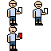

Floood | 28/08/2022
Making a game in 7 days : Paparazzi
Ever made a game 7 days? Well, in this last week, one friend and I created a fully playable game with six difficult, but short levels for the Brackeys Game Jam 2022.
So what is paparazzi? Paparazzi is a platformer game wherin you have to avoid the paparazzi taking your picture. It has a pretty big difficulty curve, due to the 7 days not being enough for me to properly have people play test. It was also my first game jam, so of course I had lower expectations of what we would create.
I started out by signing up for the Brackey's Game Jam. As soon as a theme was decided, I asked for some help in coming up with ideas for the game on my school's discord server. One person, Lukemonkinz, came to my aid, and we would end up being the two creators of the game. We discussed some ideas and eventually came up with the idea of avoiding the paparazzi. We immediately got to work on making the movement script. The movement was suprisingly simple, and being somewhat based off of some code I'd written for a quake movement system for godot, just translated into 2D. We then drew all the pixel art for the still unnamed player character.
Next, we created the paparazzi themselves. The first thing we did was cerate their range of view and then their code. After that, we gave the paparazzi a texture, the "bald unibrow man".

We also created a moving paparazzi. We felt we needed more challenging paparazzi, and of just more content for the game.
We started working on the menu and level 1. As I worked, I would continue to add more settings. For level 1, I drew up a nice "road" tileset, and placed some tutorial text.
For level 2, we decided to make it very similar to level 1 and make it night time. It was a simple level with a few paparazzi, meant to teach about playing.
Level 3, or the crytal cavern, is the (in my opinion) best looking level, due to it's multicolor crystals. It's also one of the longer levels. After talking to my friend also working, we decided to add a split path, with one being more difficult to accsess, and the other being a timing puzzle where you have to avoid two different walking paparazzi. This level would lead into the next level, the sewers.
So, for the sewers level, I wasn't doing the level design, and in fact, it was my partner in this project, Lukemonkinz. He fully designed the level, all I did was place some lights. He also spent quite a lot of time on the pipes, making sure they were always consistent, giving the level its unique look. The exit to this level lead directly to the mountain level. The vampire paparazzi was also created for this level.
The Great Mountain level was also designed by Luke, though I played a slightly larger role. We wanted this to be much more vertical than the other levels, and I think we got that part. At the top of the mountain, we added a new sprite, the mysterious man. We decided the story then and I got to work building a small dialogue system for the story. After that was built, I added the story, and the mailman in level 3
After all of that, it was the second last day, and I had to code a rocket, as Luke had already drawn it for me. So I got to work, making it work like the player and the paparazzi, as well as drawing the explosion texture. After so much debugging, we finally had the fully functional rocket. Then we made the player's rocket, that was quite easy. After all that, there was one thing left for the game, the last level and the music.
I started off the last day by creating three test songs, Menu, MenuAlt, and MenuAlt2. MenuAlt ended up being the real menu theme, and menuAlt2 ended up as the level 3 theme music. Luke and I then created the final level by mixing our old levels with rockets. I decided to work on the level 1 music, but ended up with the music for level 5, The Great Mountain. The next song, Ending!!!, was meant to be for level 1 at first as well, but I quickly changed my mind after writing a little bit of music, and that became the level 6 music. Level 1's music came next, and writing a drum beat for 3/4 time is difficult when you don't typically write in 3/4. After a short food break, I moved on to levels 2 and 4, leaving the even numbered songs for last. After a little bit, the sewers and night songs were written, using similar chords at the beggining. After creating the music system, I finished up the game, and sent it out into the world!
So, if you've ever wanted to make a cool game in a week, it's defenetly possible, even if you don't have as much experience as some other people. Take my first finished game project as a cool little game, and something anyone could make with free tools. For this game jam, I used Godot as my game engine of choise, aseprite to do the sprites, and Ableton 11 Live Standard to create the music.